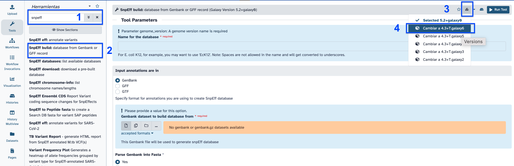

| Title | Galaxy |
|---|---|
| Training dataset: | PRJEB43037 - In August 2020, an outbreak of West Nile Virus affected 71 people with meningoencephalitis in Andalusia and 6 more cases in Extremadura (south-west of Spain), causing a total of eight deaths. The virus belonged to the lineage 1 and was relatively similar to previous outbreaks occurred in the Mediterranean region. Here, we present a detailed analysis of the outbreak, including an extensive phylogenetic study. This is one of the outbreak samples. |
| Questions: |
|
| Objectives: |
|
| Estimated time: | 1h |
After performing variant calling, we want to know which is the importance of the variants in the viral genome. In order to give sense to the variants, we need to know in which gene they are, and which are their effects.
ftp://ftp.sra.ebi.ac.uk/vol1/fastq/ERR531/002/ERR5310322/ERR5310322_1.fastq.gzftp://ftp.sra.ebi.ac.uk/vol1/fastq/ERR531/002/ERR5310322/ERR5310322_2.fastq.gz+ icon at the top of the history panel and create a new history with the name mapping 101 tutorial as explained hereFollow the same instructions here
ftp://ftp.sra.ebi.ac.uk/vol1/fastq/ERR531/002/ERR5310322/ERR5310322_1.fastq.gz
ftp://ftp.sra.ebi.ac.uk/vol1/fastq/ERR531/002/ERR5310322/ERR5310322_2.fastq.gz
https://ftp.ncbi.nlm.nih.gov/genomes/all/GCF/000/875/385/GCF_000875385.1_ViralProj30293/GCF_000875385.1_ViralProj30293_genomic.fna.gz
https://ftp.ncbi.nlm.nih.gov/genomes/all/GCF/000/875/385/GCF_000875385.1_ViralProj30293/GCF_000875385.1_ViralProj30293_genomic.gff.gz
Follow instructions here
Follow instructions here
Follow instructions here
snpeff build in the search toolbox.
snpeff eff in the search toolbox.
SnpSift ExtractFields in the search toolbox.CHROM POS ID REF ALT FILTER ANN[*].EFFECT ANN[*].GENE ANN[*].FEATURE ANN[*].HGVS_C ANN[*].HGVS_P
Galaxy history for this exercise: https://usegalaxy.eu/u/smonzon/h/variant-calling-101-tutorial